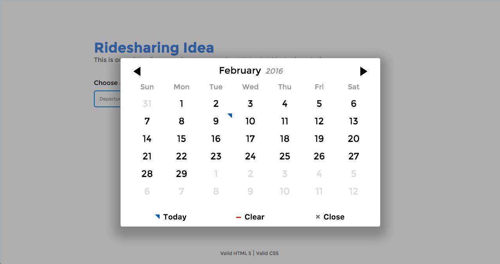
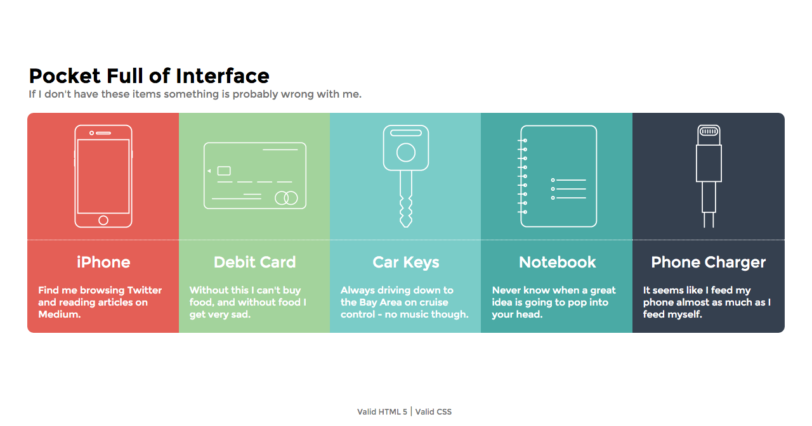
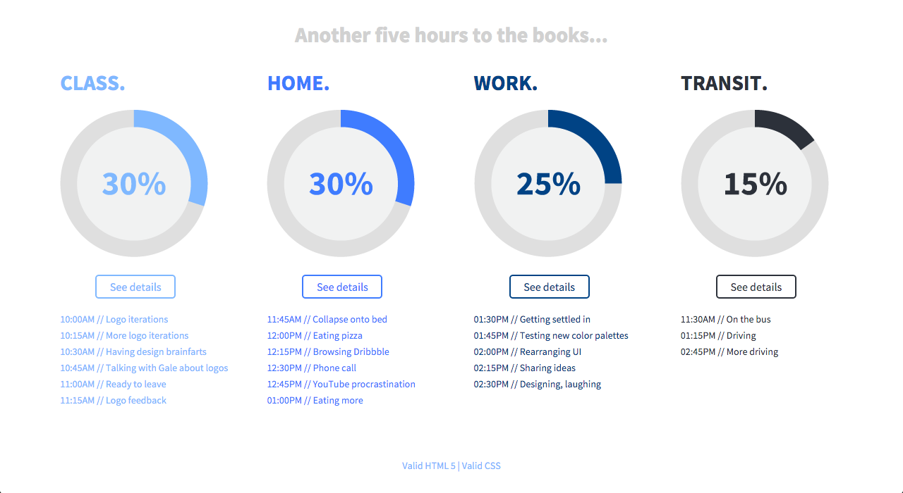
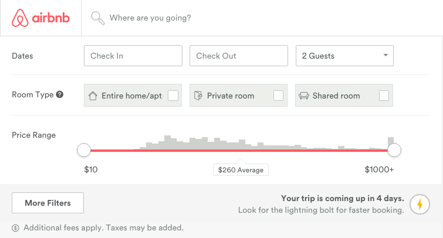
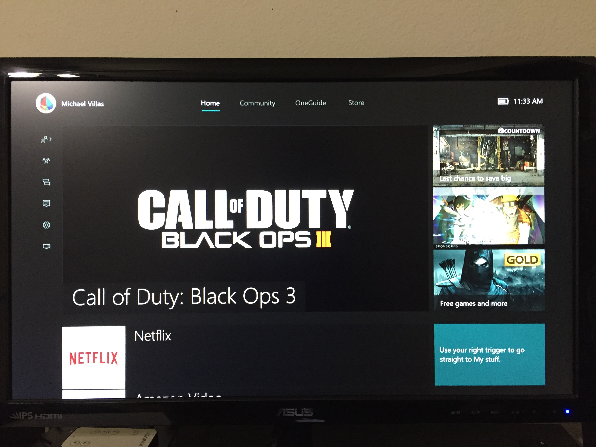

Michael's Blog
February 9, 2016
ex5 | pickadate.js
I chose the pickadate.js library for ex5 because I felt that it has core components that I will need to create a successful final project (ridesharing app). I think that one of the most crucial features in a ridesharing app is the ability to set a specific date and time for your ride. pickadate.js allows you to achieve both of those things with some very simple code.
The site I created for ex5 was a simple test of some features that I would want the ridesharing app to have. It inlcudes the date and time selectors as well as an overlay that confirms the ride you just searched for.
pickadate.js works by selecting one of your form inputs from the HTML and calling it in the javascript file with:
$('selector').datepicker(); for the calendar view
or
$('selector').timepicker(); for the time view.
It's really that simple. You also have the ability to change the appearance of both of these selectors through the CSS files and/or change how the days and months area abbreviated through the JS.
February 3, 2016
ex4 | Pocket Full of Interface
For ex4, "Pocket Full of Interface," we were to create an interactive experience that shows/tells the viewer a little bit about us and what we always carry around. My five items were: iPhone, Credit Card, Car Keys, Notebook, and Phone Charger. I created the interactivity of my site by adding a clickable block of icons that represented each one of the items mentioned above. When you click on a certain icon its description will show up using the fadeToggle command in jQuery. You can then hide or show each one as you please.
I think three aspects of my solution that support effective and interesting interface design are: changing styles on hover (color change and inset drop-shadow), fade-in/out effect (add visual interest to the click function), and a strong color palatte (grabs the viewers attention). I do feel that my layout is a bit too simple, but I think it works for what the assignment was.
January 27, 2016
ex3 | Time Is On My Side
Exercise 3, "Time Is On My Side" was another great introduction to using jQuery for adding interaction to our web pages. I ended up separating my five waking hours into the four categories of: Class, Home, Work, and Transit. My design consists of four columns to represent each of these categories - each one containing a donut chart to show the percentage followed by a list of activities and times that they occurred at.
I think the design is an engaging visual and interactive solution because of it's layout and overall simplicity. The columns provide an easy way for the user to initially scan the page separate the data. Then, if they are curious, they can click "see details" button to see a list of each action and the time it occured at. I feel like it creates a nice balance for those who just want to glance as well as those who'd prefer to see more specifics.
January 18, 2016
Airbnb Forms
At a glance, Airbnb's design looks very clean and easy to navigate, but it's when you dive in deeper that you start to realize how good it actually is. Specifically looking at the forms - which could be the most crucial part of their interface - you really start to see their great user experiene in action. Airbnb's forms are the backbone of their platform and they definitely made sure to highlight that in their design and overall usability. In Bill DeRouchey's slideshow about interface design he hits on several points that Airbnb does very well.
I think that one of the more important things that DeRouchey mentions is hierarchy; which is really important when it comes to forms. Since Airbnb provides people with a way to search for places to stay all around the world, it's really important to get the hierachy of search forms correct. They went about this by making the hierachy: Location -> Dates -> Number of guests -> Room type -> Price range. I feel that this order is one of the best they could've come up with. Another thing he brings up is whether or not the interface communicates clearly. I think a great example of how Airbnb's forms do this is their use of calendars in the "Dates" forms. Instead of typing in a date and potentially mistaking the day of the week you wanted to go, it shows you a calendar to provide visual clarity.
See Bill DeRouchey's slideshow, here.
January 7, 2016
Xbox One UI
One user interface that I probably interact with more than I should is that of the Xbox One. While it's not my favorite UI to navigate through, it has definitely gotten much better with its last update a few months ago. Since it's owned by Microsoft the dashboard is a tile-based system based off of the ones used in Windows 8 and the new Windows 10. For users that play online, the new interface makes it much easier to chat with friends, see who's online, and view notifications by making all of those items just one button-press away.
When looking at the main content of the dashboard, one can find their current game or application in the biggest tile so that it's easy to get back to it as quick as possible. Below that comes the other most-used apps on your device - giving it a decent heirachy to navigate around. The rightmost column on the screen is used for advertisements/announcements of new games that are available in the online store. Overall, I think the Xbox One UI could still use some improvements, but it is definitely making progress when comparing it to their previous version.
Read more about the Xbox One intefarce, here.
